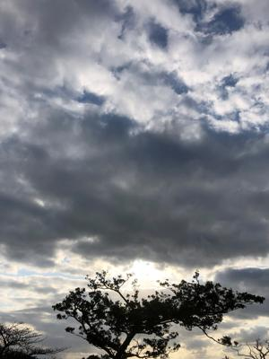
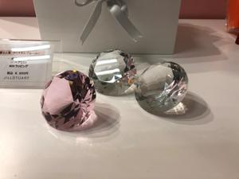

うるがいの話 ある日
最新: 吸角法【うるがいの話 ある日】とは 一日だけのプログです
『うるがいの話』の最新一日だけのプログで、通信料が少なく経済的だ。カニの画像をクリックすると全ての日付が載る『うるがいの話』サイトを表示します
|
|
【うるがいの話】 うるがい(ｳﾙｶﾞｲ urugai)とは、『もずくがに』の名前でとても大きくなります。 |
|---|---|
|
|
【カミマヤーの話】 猫のことを方言でマヤーといいます。カミマヤー（kamimayaa）とは、神の猫のことです。 |
|
【たながぁの音楽】 たながぁ（ﾀﾅｶﾞｰtanagaa）とは手長えびのことで、何種類かあり大きいのは車 エビぐらいになります。 |

|
【ぶながぁの話】 ぶながー(bunagaa)とは、赤い髪の毛、赤い身体、そして身長は１ｍ２０ｃｍ ぐらい、川の蟹を食べているの目撃された。場所は沖縄県国頭郡大宜味村のと ある村僕の隣近所に住んでいる爺さんから、聞いた話です。 |
|
|
【ギーマの話】 ギーマ(giima)とは、山原の里山に咲くスズランに似た、 花を付けます。実は食べられます、 気が付くと口の周りが紫になっています。 |
2022年02月26日 (土）吸角法
15:35

１７ 死体に吸角するようなもの
彼はガラスのコップ、実際には古いジャムのびんをどんなふうに持ち、沸騰し
ているお湯に入れ、それから注意深く水にさらして熱したか詳細に述べた。正
しい温度になると（彼はそれまで、彼の感覚でやってきたのであった）、彼は
そのコップを、もっと正確にいえばジャムのびんを、さかさにして足に置いた
（友達は、背中に）。
吸角法は、悪い体液を除くための古い民間療法である。それは数千年前にまで
さかのぼることができ、かつては医者の知識技法の中でも頼みの綱の一つであ
った。
２０ 病的な肥満
医師は誤診をした。
高校生の時、部活で着替えをするとき友達の背中に、５センチ程の紫をした円
が沢山あった。これは？と尋ねると体調がよくないので、治療していると答え
た。『ニュートンはなぜ人間嫌いになったのか―神経内科医が語る病と「生」
のドラマ』神経内科医ハロルド・Ｌ・クローアンズ著を読んだ。友達の民間治
療は、吸角法といい、それも数千年前にも遡ることが分った。あと、ドラマ『
ドクターホワイト』で、それは誤診ですと決まり文句がある。この本で見つけ
たとき、お！と、ただし出て来たのは一単語だったが。医療の専門用語が多い
ので訳者をみると、その筋の医者達９名が分担していた。昨日の夜９時前、病
院から電話がヨメにあった。耳鼻科の主治医から、お母さんの様子がおかしい
ので明日退院させた方がいいかもと相談があった。「ここは何処」と少し意味
不明の事を言い始めたのが理由らしい。ただ、週明けには圧迫骨折の対応のた
め外科での処置があることから、そこを終えてからということになった。内科
耳鼻科、外科と数か所に及んでいる。本にあった事例に似通っているかもと思
う。子供から不正利用されたお金は戻ってくると連絡が、あったヨカッタ。

１５時３１分 ビットコインの総資産 ￥１３、１０７↑